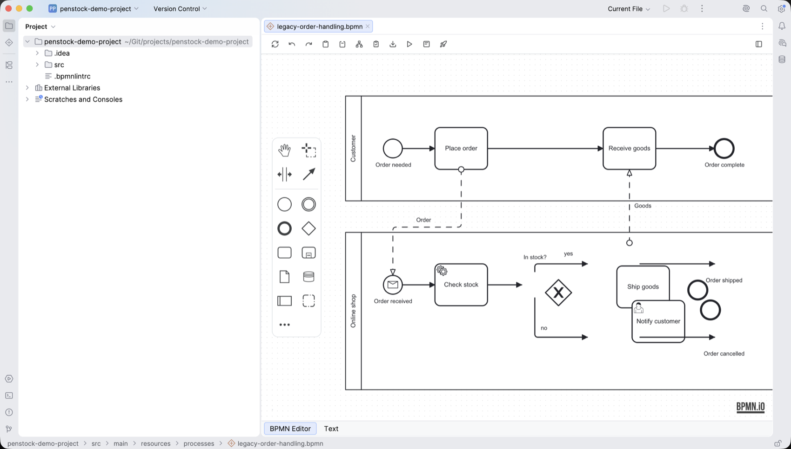
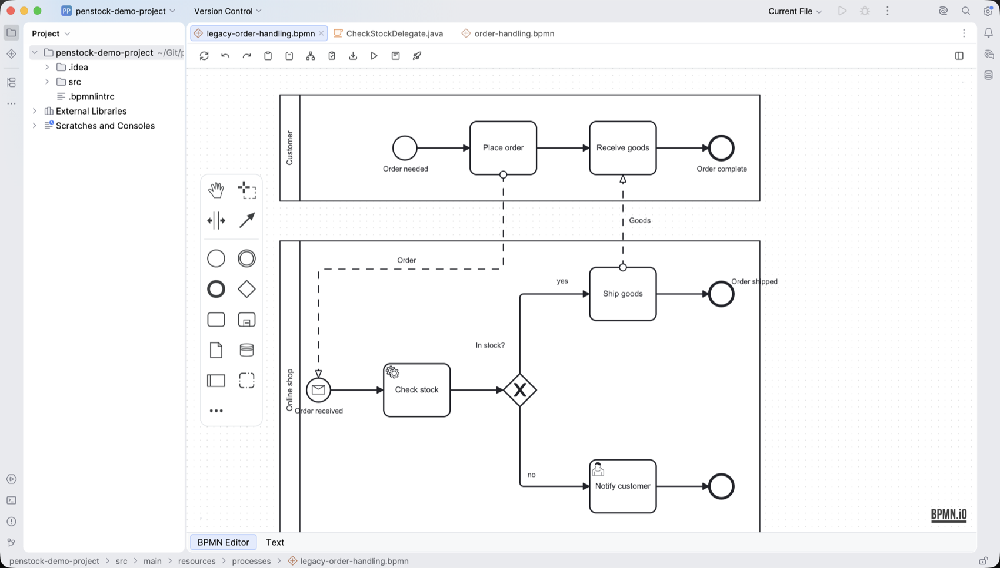

Guide / Checking
Auto layout
Auto layout draws your whole diagram again, left to right and tidy, from what the process means.
What it is
Auto layout is not a tidier. It throws away the positions in the file and places every element again from the process model. A messy diagram comes back readable. A diagram you drew with care comes back arranged by the engine's rules, not yours.


Run it
- Open the diagram.
- Press Auto Layout on the toolbar.
- The diagram is laid out at once. A message says so and has an Undo button.
- Look at the result. If it reads worse, press Undo in the message or on the toolbar.
There is no separate preview and no save step. The change goes through the same undo stack as any other edit, and the new positions are written to the file as they land on the canvas. To compare with the saved version, use the diagram diff.
From a terminal, penstock layout . says what would change. penstock layout . --write saves it. See Every command.
How it decides
- Elements are put in columns, left to right, by the longest chain of flows that reaches them. The flow reads left to right whichever way it was drawn.
- Elements in one column are spread into rows, in an order that keeps connections from crossing.
- A sub-process or a pool is sized by what is inside it.
- Pools that exchange messages are stacked near each other.
- Connections are routed around shapes, with only horizontal and vertical segments.
- Labels and annotations are placed last, against the routes that were drawn.
- Penstock builds several arrangements, measures each one and keeps the best.
What it will never do
These are checked on every diagram in a test set of 88 real diagrams, and a layout that breaks one fails the tests:
- No two shapes overlap.
- No connection goes through a shape that it does not connect.
- Both ends of every connection stay on their element.
- Nothing leaves the pool, lane or sub-process it belongs to.
- A boundary event stays on the border of its task.
- Every segment is horizontal or vertical.
- No connection doubles back.
- Labels do not land on each other.
- Nothing changes what the diagram means: no element changes parent, no connection changes source or target.
One thing is removed: if the file has two connections of the same type from the same source to the same target, the second is deleted first.
What it trades away
Keeping every route out of every shape costs crossings and length. A message flow between two pools that are not neighbours has to go around the pools in between. People drawing by hand put the two communicating tasks above each other and draw a short line. The engine does not, because that costs more room and more crossings overall.
So a diagram you tuned by hand may read better in places than the result. Use auto layout on a diagram you did not draw, on one edited until it is unreadable, and on generated output. On a diagram you have tuned, look at the result before you go on.
Spacing is not a setting
The engine is tuned to its own spacing. A few pixels either way made its layouts worse. So layout in penstock.yaml and .bpmnlayoutrc are not read. Delete an old .bpmnlayoutrc.
What you see
- The diagram is drawn again, left to right. No shapes overlap and every connection has only horizontal and vertical segments.
- A message says the diagram was laid out, with an Undo button.
- The file has changed already. There is nothing to save.
Common problems
- The button asks me to buy Pro.
- Auto layout is a Pro feature. The message explains it and offers to buy or sign in. See Buying and signing in.
- It says "Stop Token Simulation before editing the diagram".
- Auto layout is blocked while a simulation runs. Press Simulate to stop it.
- I do not like the result.
- Press Undo. One press takes the whole layout back.
- The diagram changed a lot in Git.
- Every element may have moved. Use the diagram diff: it marks elements that only moved apart from real changes.